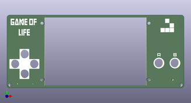
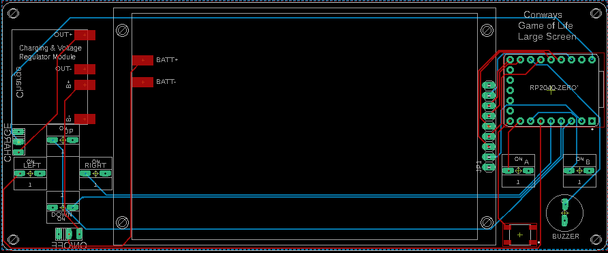

I'm back again with a new and improved version of my Conway's Game of Life Coloured Version.
This biggest and most obvious improvement is the size of the TFT screen.
The Game of Life is meant to be played on a large field and this screen measures 3.5" compared to 2" which is what I used in the last coloured screen build.
For those wondering what the hell is Conway's Game of Life - here's a description I used in my last build
The Game of Life is a cellular automation created by mathematician John Conway.
It's what is known as a zero player game, meaning that its evolution and game play is determined by its initial state and requires no further input.
You interact with the Game of Life by creating an initial configuration and observing how it evolves.
The game itself is based on a few, simple, mathematical rules consisting of a grid of cells that can either live, die or multiply.
When the game is run, the cells can give the illusion that they are alive which is what makes this game so interesting.
So what do you get in this build?
My Game of Life Colour Arcade is a feature-rich cellular automaton and arcade gaming console built on a Raspberry Pi Pico (RP2040) with a 3.5" 480×320 colour TFT display and six buttons.
At its core is Conway's Game of Life (GOL), but the project goes far beyond the classic GOL— it includes over a dozen simulation modes and 13 preset patterns, from iconic spaceships like the Coe Ship and MWSS to methuselahs like Acorn and R-Pentomino, glider guns, and oscillators.
A custom edit mode lets you draw your own starting patterns cell by cell.
Beyond Conway's rules, the device runs six alternative cellular automata: Day & Night, Seeds, Brian's Brain, Cyclic CA, Wireworld, and Langton's Ant, as well as Wolfram's 1D elementary automata with all 255 rules.
A GOL Rule Explorer lets you define custom birth and survival conditions and watch them evolve in real time.
Visual features include age-based colour gradients, soft fade trails, grid overlay, a population counter, and three cell sizes. Settings like brightness, speed, and sound are all adjustable in-game.
On top of all the simulations, the device doubles as a mini arcade cabinet with three games — a Star Wars game of my own design, Breakout Beyond, and Gyruss — all navigated from a clean scrolling menu system.


I have included a PDF of the parts list with links for all of the parts which you can find on this step in case you want to print it out etc.
Unlike the last build, I have used more through hole components.
Firstly, to make it easier to build, and second, I have included a back to this now which covers the solder joints.
The PCB and front panel information can be found on the next step
PARTS:
Raspberry Pi Pico Zero X 1 - Ali Express
Charging & voltage step-up module X 1 - [Ali Express](https://www.aliexpress.com/item/1005005656423941.html?invitation
Code=Z2RJS0ZlUjdWeXFvTWJjdCtIcWRwMmRJWDI2Qmpid1BLbVJRSE91aHMvTWpmdl
BzNkVmWTlBPT0&src
Sns=sns_More&spread
Type=social
Share&social_params=21926311787&biz
Type=Product
Detail&spread
Code=Z2RJS0ZlUjdWeXFvTWJjdCtIcWRwMmRJWDI2Qmpid1BLbVJRSE91aHMvTWpmdl
BzNkVmWTlBPT0&aff_fcid=32541398e7fa42cb8605beb5c28e25dc-1756343760169-03338-_mtlLJJx&tt=MG&aff_fsk=_mtlLJJx&aff_platform=default&sk=_mtlLJJx&aff_trace_key=32541398e7fa42cb8605beb5c28e25dc-1756343760169-03338-_mtlLJJx&share
Id=21926311787&business
Type=Product
Detail&platform=AE&terminal_id=626fe2c0a06b403387f3a97d33b76738&afSmart
Redirect=y)
TFT Display 3.5inch ST7796S/ST7796U LCD Display 1 - Ali Express
Battery - I like to recycle old mobile batteries on these builds.
You can also buy them and this one would work fine - Ali Express
Momentary switches X 6 - Ali Express
On/Off Switch X 2 - [Ali Express](https://www.aliexpress.com/item/32828124825.html?invitation
Code=U0ZjejE5SDZUR3Rvd3A4dlNzTHhPMmRJWDI2Qmpid1BLbVJRSE91aHMvTWpmdl
BzNkVmWTlBPT0&src
Sns=sns_More&spread
Type=social
Share&social_params=21930568662&biz
Type=Product
Detail&spread
Code=U0ZjejE5SDZUR3Rvd3A4dlNzTHhPMmRJWDI2Qmpid1BLbVJRSE91aHMvTWpmdl
BzNkVmWTlBPT0&aff_fcid=78cd7743d6d84c87a62a111f31d5ed0d-1756352449635-03501-_mMmygFX&tt=MG&aff_fsk=_mMmygFX&aff_platform=default&sk=_mMmygFX&aff_trace_key=78cd7743d6d84c87a62a111f31d5ed0d-1756352449635-03501-_mMmygFX&share
Id=21930568662&business
Type=Product
Detail&platform=AE&terminal_id=626fe2c0a06b403387f3a97d33b76738&afSmart
Redirect=y)
Buzzer - Ali Express
Micro Momentary Switch - [Ali Express](https://www.aliexpress.com/item/1005006956741903.html?spm=a2g0o.productlist.main.6.3714VtyYVtyYWA&aem_p4p_detail=202512012013053186468671941280003530927&algo_pvid=77e41f87-a64a-474c-910f-b4c95e360006&algo_exp_id=77e41f87-a64a-474c-910f-b4c95e360006-5&pdp_ext_f=%7B%22order%22%3A%228%22%2C%22eval%22%3A%221%22%2C%22from
Page%22%3A%22search%22%7D&pdp_npi=6%40dis%21AUD%213.23%212.75%21%21%2114.75%2112.54%21%402103129017646487854512530eb65b%2112000038853341475%21sea%21AU%21129764711%21X%211%210%21n_tag%3A-29919%3Bd%3Abadc4977%3Bm03_new_user%3A-29895&cur
Page
LogUid=meKpY4AXI4Zs&utparam-url=scene%3Asearch%7Cquery_from%3A%7Cx_object_id%3A1005006956741903%7C_p_origin_prod%3A&search_p4p_id=202512012013053186468671941280003530927_2)
Male Pin Headers - Ali Express
Low profile female pin headers - Ali Express
M2 Screws - Ali Express
M2 Spacers - Ali Express





We all have different levels of knowledge, so when it comes to a build like this I want to make sure that I'm providing enough information so anyone with basic soldering skills can make it.
That includes ensuring there are instructions on how to get your own PCB's printed (which is super easy!).
So with that said, the first thing you will need to do is to get the front panel and PCB printed.
I use JLCPCB (not affiliated) to get this done.
The front and back panel are actually just PCB's without any components included!
The design on the panels is done in a program called Inkscape (available free) and the actual panel itself (the outline, drilled holes etc) is done in Fusion 360 (also free for now...)
The files that you need to build your own Game of Life can be found in my GitHub page.
This includes the parts list, Gerber files for the PCB & front panel, schematic, Code etc.
Download all the files to your computer
STEPS:

This build is the first iteration and I have made a number of improvements to the design which I have listed below.
PCB and Panels


The following step ensures that you can remove the front panel easily and without having to de-solder anything.
This is important, especially for maintenance, battery changes, troubleshooting etc.
You may notice that in the images, the screws I used are quite long.
I changed these out to shorter ones that just managed to fit.
You can use long ones but you will need to trim them at some stage.
STEPS:


STEPS:


STEPS:


The charging and voltage booster module is a great little board.
It allows you to add say a 3.6V battery like a mobile one, and you can increase the output voltage via a small potentiometer located on the board.
STEPS:


Now you can go ahead and add the rest of the components to the PCB
STEPS:


Ok - nearing the end now of the build. The last thing to do is to solder the female pins for the screen to the PCB.
STEPS:


In this build, I added a back panel.
So in total there is a front panel, PCB and back panel.
I did this for a couple reasons. first, it ensures that non of the solder points are being touched with your fingers which can cause shorts, it is more comfortable to hold and I wanted to make this easier to build then the version beforehand which had a lot of SMD parts.
The only concern is the additional cost of getting the back panel printed.
However - I think it is worth it.
STEPS:

Download the GitHub Files.
If you haven't installed Arduino on your computer, then this is the first thing you should do.
Just follow the below instructions which are straight forward and you wont have any issues with loading the code to the Raspberry Pi Zero.
If you find that you are having issues, then ask Claude (AI) for help.
This is what I do when I get stuck and it always manages to sort it out for me!
STEPS:
https://github.com/earlephilhower/arduino-pico/releases/download/global/package_rp2040_index.json


In-Game Controls (All Simulation Modes)
Up - Increase simulation speed
Down - Decrease simulation speed
Left - Cycle cell size (Small 3px → Normal 4px → Large 8px)
Right - Reset / regenerate the current pattern
Up + Down - colour mode
SET (hold) - Start simulation from edit mode
SET (hold, running) - Return to edit mode (Custom/Seeds/Brian's Brain only)
B (short press) - Return to menu
B (hold ~1 second) - Show/hide rules and information panel
Tools Menu
Hardware & Setup
The device runs on a Raspberry Pi Pico / RP2040 connected to a 3.5" ST7796S/ST7796U TFT display (480×320 pixels) via SPI.
Six buttons handle all navigation and gameplay — Up, Down, Left, Right, SET (A), and B.
A buzzer on GPIO 26 provides sound effects and music.
Display brightness is PWM-controlled, and all settings (sound, volume, brightness) are saved to EEPROM so they persist between power cycles.
Main Menu
On startup the device boots directly into the main scrolling menu with eight sections:
Navigate with Up/Down, select with SET, go back with B.
Conway's Life Modes
Presets (13 patterns)
Each preset loads a famous Life pattern centred on screen.
Press SET once to open it, then A to start the simulation.
While paused you can press Left to change cell size (the pattern rescales and redraws) or Right to reset it back to its starting state.
1 - Coe Ship. Puffer-type spaceship that leaves debris trails
2 - Gosper Gun. The first glider gun ever discovered — period 30
3 - Diamond. Symmetric expanding diamond pattern
4 - Achim p144. Rare period-144 oscillator
5 - 56P6H1V0. High-period spaceship
6 - LWSS Convoy. Three Lightweight Spaceships in formation
7 - MWSS. Middleweight Spaceship — 8 cells, speed c/2
8 - Pulsar. Period-3 oscillator with 4-fold symmetry, 48 cells
9 - Pentadecathlon. 15 oscillator made from a modified 10-cell row
10 - R-Pentomino. 5-cell seed that runs for 1,103 generations
11 - Acorn. 7-cell methuselah running 5,206 generations
12 - Simkin Gun. Smallest known glider gun — 36 cells, period 120
13 - Queen Bee. Period-30 oscillator, the first of its kind ever found
Random
Fills the board with random live cells at approximately 30% density. Immediately starts running. Press Right to re-randomise.
Symmetric
Generates a random pattern with one of three symmetry types — vertical, horizontal, or rotational — in small, medium, or large sizes. Good for producing interesting structured chaos.
Custom
Puts the board into edit mode with a blinking red crosshair cursor.
Move the cursor with Up/Down/Left/Right.
Press SET to toggle a cell on or off.
When happy with your pattern, hold SET for about a second to start the simulation.
Hold SET again to return to edit mode.
Press B to go back to the menu.
Rule Explorer
Lets you define your own cellular automaton by setting custom Birth (B) and Survival (S) rules — the same notation used by Life (B3/S23).
Choose from 12 built-in rule presets or enter your own bit-by-bit.
The simulation runs with your rules applied to a random starting board.
Included preset rules:
Alternative Cellular Automata (Alt Games)
Brian's Brain
A three-state automaton (On, Dying, Off) producing a constantly moving stream of light-speed "signals." Choose from small, medium, large, or random seedings, or draw a custom starting pattern.
Day & Night (B3678/S34678)
A symmetric ruleset where dead and live regions are interchangeable. Dense regions survive and grow in a way that mirrors the original — creating organic, blob-like patterns.
Seeds (B2/S)
Every live cell dies every generation but any dead cell with exactly two live neighbours is born. Creates explosive, constantly moving patterns that never stabilise.
Cyclic CA
A multi-state automaton where cells cycle through states 0→1→2→…→N→0.
Cells advance only when they have a neighbour in the next state.
Produces stunning rotating spiral waves.
Choose small, medium, or large seedings.
Wireworld
A four-state automaton (Empty, Wire, Electron Head, Electron Tail) that models digital logic circuits.
Electrons travel along wires, interact at junctions, and can form AND gates and clocks.
The built-in demo includes a working circuit layout.
Langton's Ant
A single ant on a grid follows two rules: turn right on a white cell (flip it black), turn left on a black cell (flip it white).
After ~10,000 chaotic steps it spontaneously builds a repeating diagonal "highway." Toggle age-colour mode with Up+Down to see a heat map of how often each cell has been visited.
Wolfram 1D Automata
One-dimensional elementary cellular automata — a single row of cells evolves downward according to one of 255 possible rules.
Each rule produces a unique pattern, from pure chaos (Rule 30) to the Sierpinski triangle (Rule 90) to a Turing-complete system (Rule 110).
Seven named presets are provided or you can enter any rule number direct
Arcade Games
Accessed from main menu item 8. Three games are available. In all three, press A + B together at any time to exit directly back to the main menu.
Star Wars
A first-person Star Wars game inspired by the 80's arcade game.
Progress through multiple stages: Womp Rat Training, Space Battle, Death Star Approach, Surface Run, and the Exhaust Port shot.
Features full Star Wars music (Main Theme, Binary Sunset, Imperial March, Victory Fanfare), sound effects, TIE fighters, laser cannons, proton torpedoes, and a dramatic finale sequence.
Press B on the title screen to exit.
Controls:
Breakout Beyond
A feature-rich Breakout variant with a neon aesthetic.
The paddle sits at the bottom, bricks at the top.
Features include combo multipliers, spin physics, multiball, shield power-ups, bomb bricks, and hard bricks across 20 levels.
Controls:
Gyruss
A circular shoot-em-up inspired by the 1983 Konami arcade classic. Your ship orbits around the edge of the screen shooting inward at waves of enemies that fly in formation patterns.
Controls: